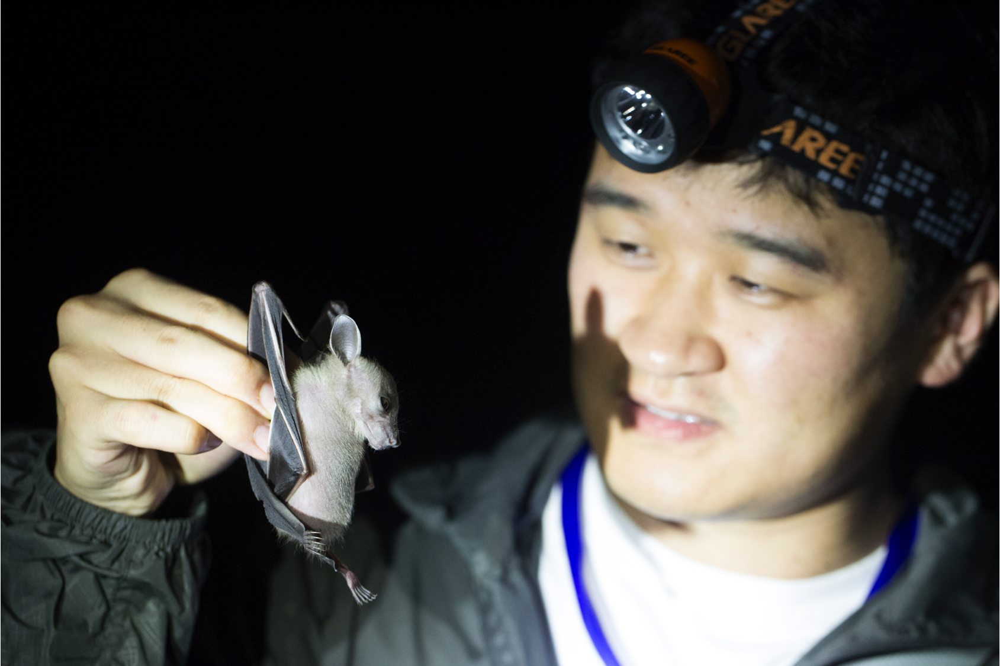
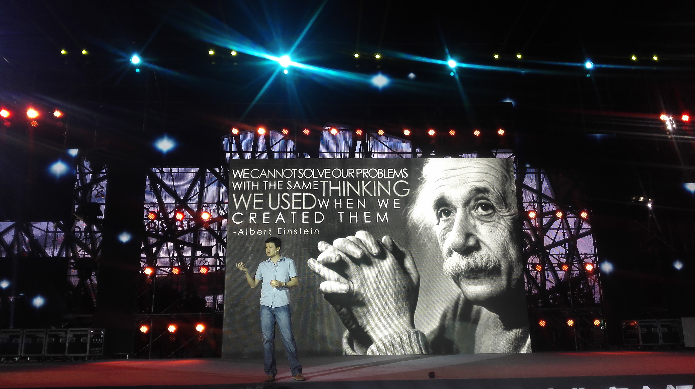
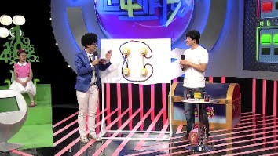
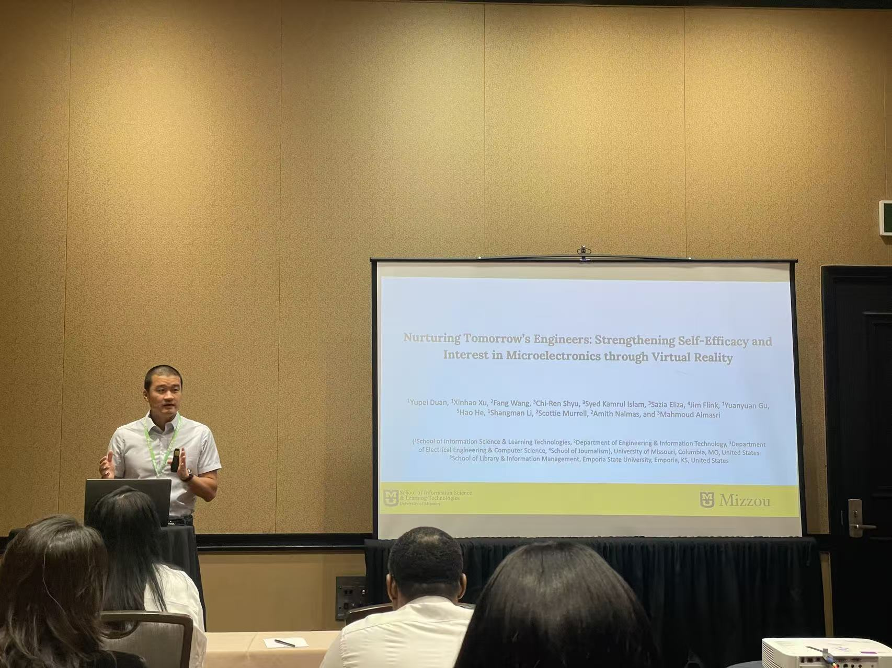

About
A teacher’s perspective in learning technology research.
I connect extensive experience in science teaching and educational leadership with emerging research expertise in human-centered AI, immersive learning, and STEM education.
Yupei Duan is a learning technology researcher, educator, and designer pursuing a Ph.D. in Information Science and Learning Technologies at the University of Missouri.
His research focuses on artificial intelligence, immersive technologies, and game-based approaches to STEM learning and professional education. Recent work includes an AI-enhanced virtual patient environment, an immersive microelectronics laboratory, a mixed-reality and generative-AI geography environment, and research on AI literacy, problem solving, reflection, and learner agency.
Before beginning doctoral study, Yupei spent more than sixteen years as a biology and science teacher, curriculum leader, and school administrator in K–12 education. This experience grounds his research in the practical needs of educators and learners.
He earned an M.S. in Information Science and Learning Technologies with an emphasis in Online Education from the University of Missouri and a B.S. in Biological Sciences from Capital Normal University. He also works in public science communication as a translator, columnist, and designer and host of science programming.
A Life in Science Education
Learning with students, audiences, and scholarly communities.




Profiles and contact
Find my work across the scholarly web.
Privacy
Respectful, aggregate website analytics.
This website uses Cloudflare Web Analytics to understand aggregate visits and page performance. It does not use analytics cookies or identify individual visitors.
Let’s connect